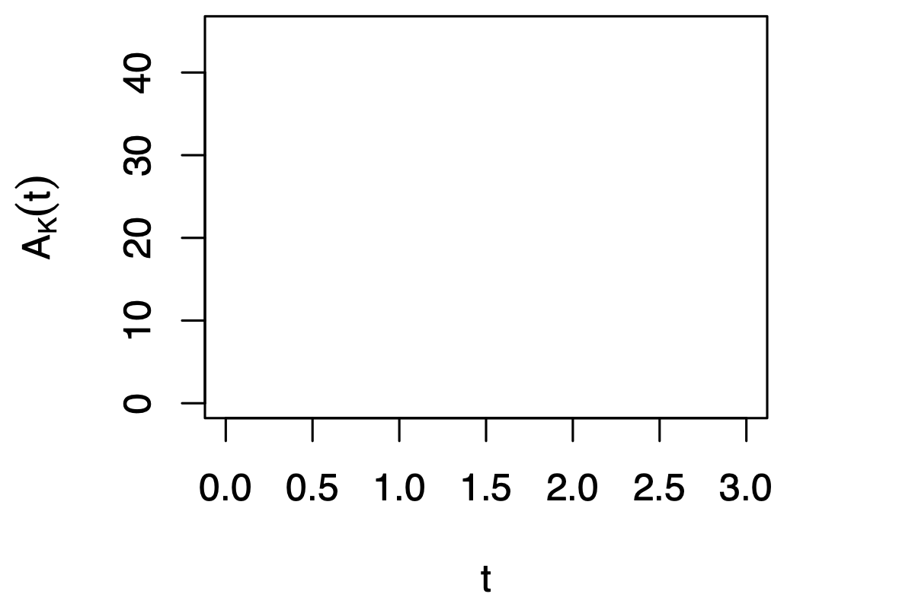
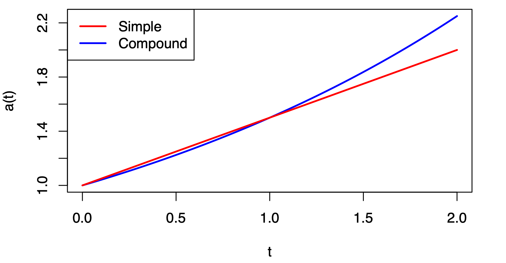

When a landowner allows a farmer to use the land he owns, the farmer has to pay “rent” to the landowner.
When a banker lets a borrower to use a certain amount of money, the banker will charge the borrower something.
Interest may be defined as the compensation paid by a borrower of money to a lender.
Thus we can view interest as the rent paid by a borrower to a lender for the loss of use of the money.
If an investment of \(K\) (called the principal, i.e., the amount of money that the borrower borrows/lender lends at time \(t=0\)) grows to \(S\) (at a later time, say, \(T\)), then the interest is the difference
Question: Why do we charge interest?
What do you think the relationship should be?
Often, \(A_K(t) = K a(t)\).

Given \(A_K(t) = \frac{1000}{50 - t}\) for \(0\le t < 50\), calculate \(K\) and \(a(10)\), assuming that \(A_K(t) = K a(t)\).
Solution:
When \(0 \leq t_1 \leq t_2\), the effective interest rate for \([t_1,t_2]\) is
and if \(A_K(t) = Ka(t)\) then
Question: Why not use \(A_K(t)\) to define the rate?
This is because \(A_K\) might depend on the principal \(K\).
For a positive integer \(n\), the interval \([n-1, n]\) is called \(n\text{-th}\) time period.
We write
and hence,
How would this simplify for \(i_1\)?
Assume the accumulation function \(a(t)\) is linear in \(t\), and since \(a(0) = 1\), we have
where \(s\) is called the simple interert rate.
Note:
We call \(A_K(t) = K(1 + st)\), the amount function for \(K\) invested by simple interest at rate \(s\).
Tonya loans Renu \(1,600\). Renu promises that in return, she will pay Tonya \(2,000\) at the end of four years. To what rate of simple interest does this correspond?
Solution:
Antonio loans his brother Bob \(2,400\) for three years at \(5\%\) simple interest. The brothers agree that if Bob wishes to repay the loan early, he may do so, and the repayment amount will still be based on \(5\%\) simple interest.
Find the amount Bob would be required to pay if he makes his repayment at the end of three years. What if the repayment is after two years or after one year? Calculate \(i_1, i_2\), and \(i_3\) if the loan lasts the full three years.
If Bob repays the loan after
Therefore,
Note: The annual effective interest rates are decreasing.
In the simple interest case:
So, \(i_n\) is decreasing in \(n\), and moreover,
Therefore, simple interest is rarely used for loans of long duration; otherwise you would go into the bank, close your account, and then instantly reopen it.
Define \(i = i_1 = a(1) - 1\).
Assume that an accumulation function \(a(t)\) has the associated periodic interest rates all equal, i.e., assume that
Then the accumulation function must equal to
We call \(a(t)\) defined above the compound interest rate accumulation function at interest rate \(i\).
The word “compound” means that the interest earned is automatically reinvested to earn additional interest.

An account is opened with \(12,000\) and is closed in \(6.5\) years. The account earns \(5\%\) interest. How much is withdrawn from the account if
Compound interest is paid throughout.
Compound interest is paid on each whole year and then simple interest is paid on the last half year.
Assume that \(1,000\) is deposited into an account. The effective annual compound interest rate is \(3\%\) for the first year, \(4\%\) for the next two, and \(1\%\) for the next three.
How much would be in the account at the end of the six years?
Solution
Suppose you want to have \(1,000\) in three years. You currently have \(900\) to invest.
What interest rate (annually compounding) do you need to accomplish your goal?
Solution
implies
Suppose you want to have \(1,000\) in three years. If you could earn \(2\%\) annually compounding interest, how much would you need now to invest to accomplish your goal?
Solutions
so
When you rent an apartment, usually you are required to pay rent for each month at the beginning of the month. In other words, you pay the rent before you have the use of the apartment.
We said that interest may be thought of as a rent for the use of the investor’s money. It is therefore not surprising that there are financial arrangements in which the interest must be paid by the borrower before the borrowed money becomes available.
Loan 1: \(500\) is borrowed for a year at an effective rate of interest of \(6\%\). At the end of the year, the borrower pays the lender \(530\).
Loan 2: \(500\) is borrowed for a year, but the borrower pays the interest at the loan’s inception. The borrower receives \(470\) and must repay \(500\) at the end of one year.
In both cases the interest paid is \(30\).
However, in the second case the interest is paid on a loan of only \(470\).
Loan 2 is an example of computing interest as a discount and is said to have an effective rate of discount of \(6\%\).
The effective discount rate for the interval \([t_1, t_2]\) is
If \(A_K(t) = Ka(t)\), then
Similar to \(i_n\), when \(n\) is a positive integer,
Suppose that the growth of money is governed by the accumulation function \(a(t) = (1.05)^{t/2}(1 + 0.025t)\). Find \(d_4\) and \(i_4\).
Solution
We need
and thus
Note: Usually, \(i_{[t_1,t_2]}\) and \(d_{[t_1, t_2]}\) are not equal.
A rate of interest and a rate of discount are said to be equivalent for an interval \([t_1, t_2]\) if they produce the same accumulated value at time \(t_2\) for one unit of money invested at time \(t_1\):
which is equivalent to
Similarly,
\(100\) now may be worth more than \(100\) in three years.
Why?
You could invest this \(100\) today and it would grow to \(100 a(3)\).
Question: How much should you invest now (at time \(t =0\)) to have \(1\) after \(t\) years?
The discount function is defined by
In words, \(v(t)\) is the amount of money that one should invest at time \(0\) in order to have \(1\) at time \(t\).
For example,
Suppose that the growth of money for the next five years is governed by simple interest at \(5\%\).
How much money should you invest now in order that you have a balance of \(23,000\) three years from now?
Solution
Question: What if one wishes to invest \(X\) not at time \(0\) but at a later time \(t_1>0\) with the goal of receiving \(S\) at \(t_2 > t_1\)?
Let us draw the timeline:
Read: Example 1.7.3, and also page 35 - 40 for very useful instructions on Cash Flow worksheet using the BA II Plus calculator.
Suppose that the growth of money for the next five years is governed by the linear accumulation function \(a(t) = 1+0.05t\).
If you wish to invest money two years from now so as to have \(23,000\) five years from now, how much money should you invest?
Let \(X\) be the amount invested at time two.
So we have \(X v(2) a(5) = 23000\),
and thus
Warning: \(a(5)v(2) = a(5)/a(2) \neq a(3)\)! Read Example 1.7.3 & 4, and top of page 32.
In Section (1.4) we considered two parties negotiating a loan with a fixed amount of interest per basic time period for each \(1\) borrowed.
Suppose that we again consider two parties negotiating a loan, but this time they agree on a fixed amount of discount \(d\) per basic time period for each \(1\) borrowed.
Then, if the loan period is \([0, t]\) and \(K\) is the loan amount, the borrower receives \(K - Ktd = K(1 - td)\).
In particular, the borrower receives \(1\) if \(K = (1 - td)^{-1}\). It follows that \(a(t) = (1 - td)^{-1}\). Then the discount function \(v(t) = 1 - td\) is linear.
is called the amount function for K invested by simple discount at rate \(d\).
is called the simple discount accumulation function at rate \(d\).
Note: It only makes sense to talk about loan terms that are shorter than \(1/d\) in this case.
In analogy with the case of compound interest, here we assume that the effective discount rate \(d_n\) is constant for every unit time period, i.e., we assume that there is a constant \(d\) such that
Then the equivalent interest rate has the form
Terminology: If “year” is our basic time unit, then we say that \(d\) is the annual effective discount rate.
Cassandra needs to borrow money to pay her tuition. She has a choice of borrowing at an annual effective interest rate of \(5.1\%\) or at an annual effective discount rate of \(4.9\%\). Which rate should she choose?
Solution 1:
An annual effective discount rate of \(4.9\%\) is equivalent to an annual effective interest rate of
Solution 2:
An annual effective interest rate of \(5.1\%\) is equivalent to an annual effective discount rate of
So by both calculations, Cassandra should borrow at the \(5.1\%\) interest rate.
In the compound discount case, i.e., the discount rate is a constant, we have
Using the notation for the discount factor \(\displaystyle v = \frac{1}{1 + i}\), we can rewrite the above as
Note:
In the compound discount case, we can rewrite the accumulation function
and call it compound discount accumulation function at discount rate \(d\).
Read: Example 1.9.13 in the textbook.
Assume that the bank credits the interest more than once per year, say \(m\) times in a single year.
We denote by \(i^{(m)}\), the nominal (annual) interest rate compounded (convertible, payable) m times per year.
The word “nominal” means that the interest rate \(i^{(m)}\) is annual in name only, i.e., the mechanism is such that the bank pays interest at the rate of
which then gets reinvested in the account.
Suppose that we have an investment governed by compound interest. Let \(i\) be the annual effective interest rate. It is also known as the annual percentage yield (APY). Then
which is equivalent to
Question: Why?
In words, for every invested unit of money, one gets
at the end of the year.
On the other hand, after every \(m^{\text{th}}\) of the year the money currently on the account grows by a factor of \((1 + i^{(m)}/m)\); there are \(m\) such compoundings in a single year, so the final amount of money equals
Finally, the two values displayed above must be equal.
Find the accumulated value of \(500\) invested for five years at \(0.08\) nominal interest compounded quarterly.
Solution
Note: The above investment scheme is equivalent to the one in which one invests \(500\) at \(2\%\) for \(20\) years.
Read: Example 1.10.5 and 1.10.6 in the textbook.
Jolene invests money in a fund for which interest is paid once every two years. The effective rate per two-year period is \(14\%\). Find the nominal interest rate convertible biennially and the annual effective interest rate governing the fund.
Solution
Similar facts exist for discount rate.
With \(d\) as the annual discount rate, we have
or, equivalently,
where \(d^{(m)}\) is called the nominal discount rate compounded (convertible, payable) m times per year.
We can derive the following relationships
and most generally, for integers \(n\) and \(p\),
If you invest \(100\) today and it grows to \(115\) in one year, what is
annual simple interest rate:
annual compound interest rate:
nominal interest compounded monthly:
nominal discount compounded monthly:
What happens as \(m\) increases?
We call
the force of interest.
Equivalently, \(i = e^{\delta} - 1, e^{\delta} = 1 + i\).
With such a notation, the accumulation function takes the form
One should imagine that the continuous compounding occurs at infinitesimally short time intervals …
We also have
If \(i>0\) and \(m>1\), then
file:///Users/jzhong/Dropbox/org-attach/35/b4273b-e9d6-4356-acb8-0f0a1744ff47/_20230911_110145main.tex t Question: Can you prove that \(i^{(m)}\) is decreasing and \(d^{(m)}\) is increasing in \(m\)?
Assuming that the interest rate is variable, you may be interested in looking at the interest rate over short periods of time. That interest rate is:
and the nominal interest rate is
which as \(m \rightarrow \infty\) tends to
We define the function of time
as the force of interest at time \(t\).
Special cases:
Recalling the definition of \(\delta_t\), and using the Fundamental Theorem of Calculus (simply put - we integrate both sides of the equality), we have
In particular, if \(\delta_t = \delta\), then